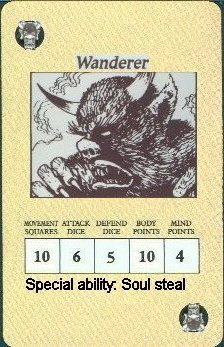

Wanderer
by The Scorpion

Download the Wanderer Monster Card (33K)
Wanderers are Deviously Intellegent demons who wander the halls of the
old worlds dungeons and rule over the weaker creatures they do not
serve zargon but suport him for they worship the same dark gods.
a Wanderer has the ability to drain power from living creatures(if you
note there idividual stats are equal to the monster who has the
greatest number in that stat)
wanderers are a integrated almost hive like society and are all
connected through necromantic magics called the dark link
Special abilities:
Soul steal: this ability comes into effect only when the wanderer actualy damages a
hero, the wanderer rolls a combat die after tge atack and if he rolls a
black shield gains a point in a random stat rolled on a red die. as
follows
|
1-2 |
: |
movement |
|
3 |
: |
attack dice |
|
4 |
: |
defense dice |
|
5 |
: |
body points |
|
6 |
: |
mind points |
as Wanderers are all connected to one another through the dark link all
wanderers after this have that increased stat line
Uses
For the love of god a boss monster
Sugested Miniature
i would use a yeti painted dark brown. or possibly a yeti with a frozen
horrors head. otherwise use a gargoyle with detached wings, many
companys have large hairy monsters that would work.